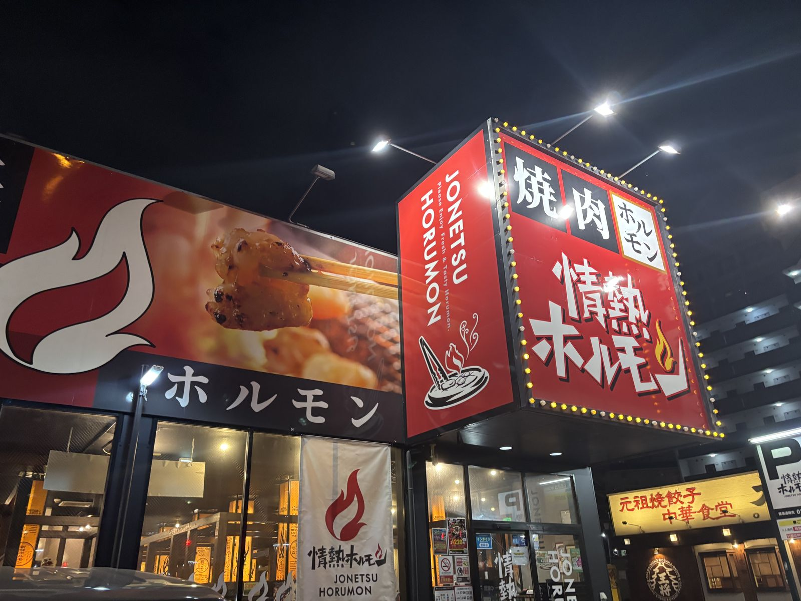
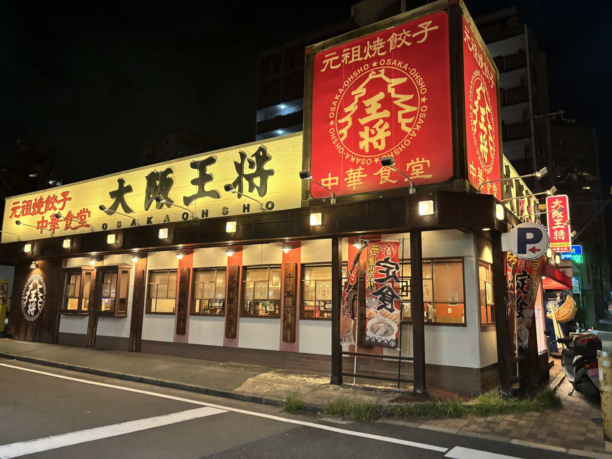

One direct ride, about 10 minutes, toward the base of the cable car.
♪
AUDIO PENDING
expects: shared/audio/main-03-to-ikoma.mp3
Getting hungry already? Dinner is still ahead near Ikoma Station, but on the walk back from City Hall to Arahon Station you'll pass two solid options if you can't wait: Jonetsu Horumon, a yakiniku grill house, and Osaka Ohsho, a cheap-and-good Chinese diner chain. Entirely optional.

